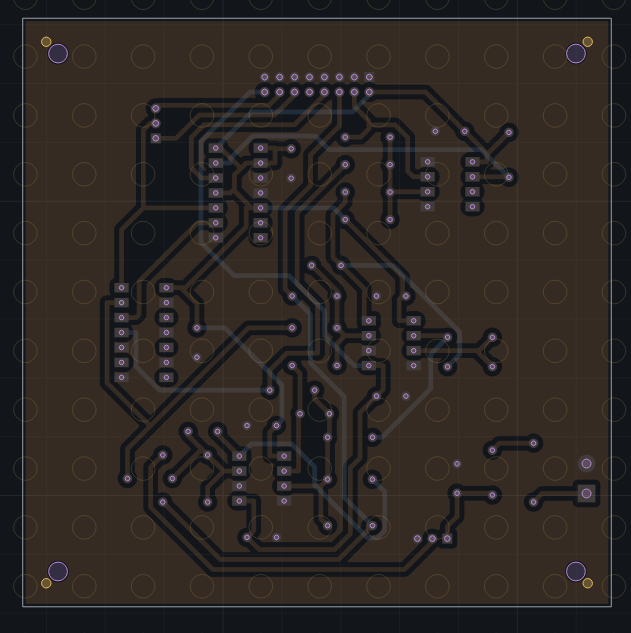
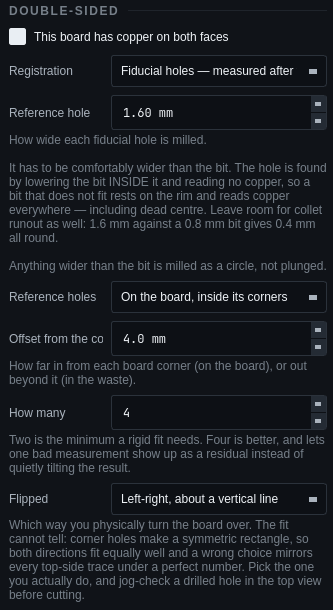
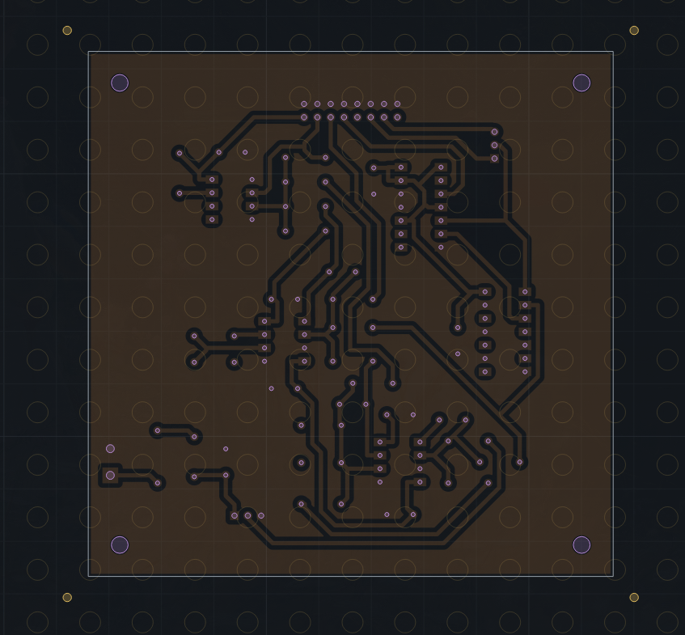

Double-sided boards
Copper on both faces, cut from both sides of the same sheet. Both faces register off reference holes the mill drills itself, never the board edge: sheared FR-4 is never truly square. At the lab that is done with fiducial holes. The drawings are live: press the buttons.
Double-sided is in the Full tier: , then , and . It needs an F.Cu Gerber in the folder, so plot F.Cu as well as B.Cu and Edge.Cuts in KiCad.

The plan
Ticking the box changes the run plan. The reference holes, the board's holes and the bottom traces are cut first. Then the board is turned over and put down again, you measure where it landed, the top traces are cut, and the cut-out moves to the very end, because it is what frees the board.
- Files:
<name>_airpass,_align(the reference holes),_bottom_drill,_bottom_traces, then after the flip_top_tracesand_cutout, re-written to where the board landed._top_drillis written on request, to finish blind holes from the top. - Z, never XY. Zero Z on the copper with VPanel on G54; X and Y stay at the machine origin for both faces. Re-zero Z after every bit change and after the flip, because the new face is at its own height.
- The probe clip. The one red clip goes on the copper facing up. After the flip, move it to the copper now on top: the two faces are not connected.
- Z travel. The same rule as always: with the bit on the copper, machine Z must stay above −50 mm (see Milling a board).
Set up the reference holes
With Fiducial holes chosen, the section shows:
- Reference hole: how wide each hole is milled, 1.6 mm by default. It has to be comfortably wider than the 0.8 mm bit, which finds the hole by being lowered inside it; 1.6 leaves 0.4 mm all round.
- Reference holes: In the waste, outside the board (the finished board stays clean, but the sheet must be bigger by the offset all round), On the board, inside its corners (when the sheet is barely bigger than the design), or Where I drag them on the stage.
- Offset from the corner and How many: use three or four. Two is the minimum a rigid fit needs, but with two a bad measurement hides inside the fit; with more it shows up.
- Flipped: which way you will physically turn the board over. See the next section: it is the one choice the fit cannot check.


The flip, and why the bottom is mirrored
The bottom face is milled first, from above, so it is cut as B.Cu seen from below: mirrored, about the flip axis. Turn the board over about that same axis and the two mirrors cancel. The bottom lands the way KiCad drew it, and the top is cut as plain F.Cu, as drawn, on top of the bottom's holes.
Set or Top-bottom, about a horizontal line to the way you will actually turn it, and turn it that way. After the flip, put the board down anywhere sensible and clamp it: there are no pins, and the next step measures where it went.
Measure where it landed
Re-zero Z on the new face (on G54) and move the clip to it. Then select on the rail.
- List the holes to probeThe nominal positions: where each reference hole would be after a perfect flip.
- Let it find each holeJog the bit over a hole you can see, about 2 mm above the copper, and press Find it for me: SRM-CAM finds the hole's exact centre itself, through the Arduino's touch test (continuity between the bit and the copper). By hand is the fallback: jog the bit down into the hole and Capture into the selected row, or type what VPanel shows.
- Read the verdictThe worst-case error: how far the worst hole disagrees with the others. Under 0.05 mm is good; up to 0.15 usable, but re-probe the worst one; beyond that, re-seat the board and probe again. The fit is applied as soon as two holes are measured, so the stage shows the board where it really is.
- Level this faceProbe the top face on (switch it to Top): the flipped board sits on new terrain, with the final Z zero at point 1 as always.
- Write the filesWrite the top traces and the cut-out rewrites both, warped to the measured flip and levelled to this face. Finish the blind holes from this side writes
_top_drillfor holes the first side did not break through.
Find it for me
This is how the lab places a flipped board, and a board etched elsewhere: SRM-CAM knows where three or more holes are in the Gerbers, and finds each one's exact centre on the real board by touch. The Arduino reads continuity between the bit and the copper, so every test answers one question: copper here, or hole? It centres to about 50 µm, better than anyone can by eye. It needs:
- The bit over the hole, about 2 mm above the copper, never at Z0: its first moves are sideways at the starting height. Aim by eye; it forgives a few tenths, and hunts in rings up to 1.5 mm out. It does not hunt across the board: if the board landed millimetres away, jog to the hole you can see.
- Copper around the hole, with the clip on it: it first touches copper 2.5 mm to one side for a surface reference.
Then every test is a short descent that either touches copper or finds none. It marches out from the start in 0.4 mm steps until it touches, and halves the gap to 50 µm; the same the other way, and the middle is the centre in X. In Y it first tries just either side of where the X chord says the edge is. A second X pass runs only when the start was well off the middle. A hole takes a couple of dozen touches.
The fit
Corner holes cannot detect a wrong flip direction: the fit looks perfect either way. Before running the top traces, select the top step, Click to jog to a distinctive drilled hole, and confirm the bit hovers over it on the real board. Ten seconds; it saves the board.
After the top: a photo, for rework
Once the top traces are cut, a phone photo laid on the bed puts the real board and the design in one frame, so a spot the mill did not cut through shows where it really is. shows a QR code; the photo arrives cropped to the copper, and you click four anchor holes in the order the design map asks. More on Photo check & rework.
The app also supports dowel pins; the lab doesn't use them — they drill permanently into the spoilboard.
A board whose copper was etched on the fiber laser, and only needs its holes? That uses the same finder and fit: see Drilling a laser-etched board.